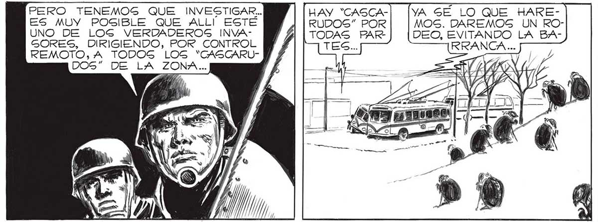
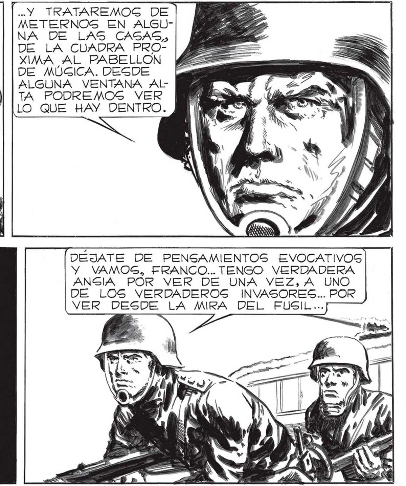
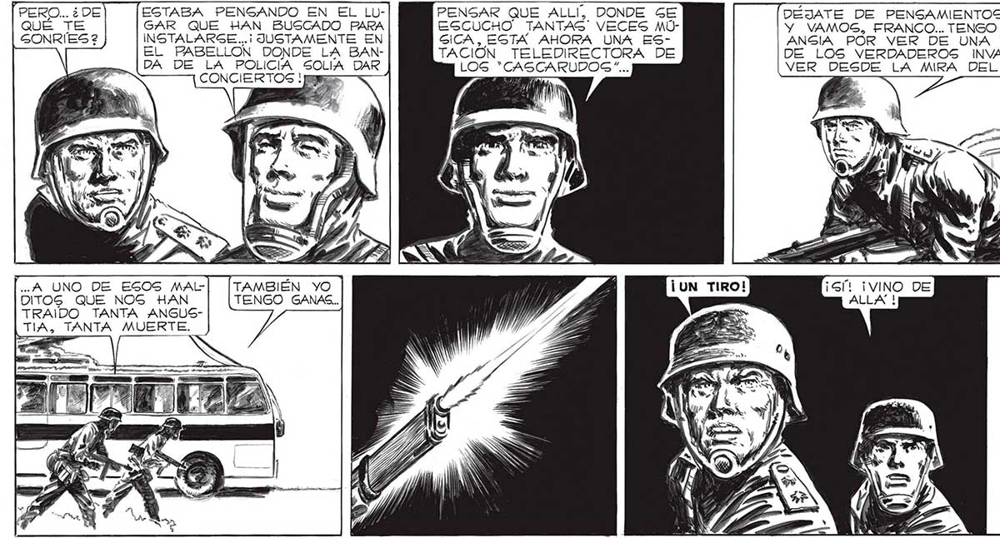

140 PERO TENEMOS QUE INVESTIGAR... HAY “CASCA-| [yA SÉ LO QUE HAREES MUY POSIBLE QUE ALLÍ ESTE "Y TRATAREMOG DE RUDOS” POR MOS. DAREMOS UN ROUNO DE LOS VERDADEROS INVAMETERNOS EN ALGU" NA DE LAS CAGAS, DE LA CUADRA PROXIMA AL PABELLON DE MÚGICA. DESDE ALGUNA VENTANA AlTA PODREMOS VER LO QUE HAY DENTRO. TODAS PAR] |DEO, EVITANDO LA BAGORES, DIRIGIENDO, POR CONTROL Y ¡ TES... 5 REMOTO, A TODOS LOS “CASCARUDOS” DE LA ZONA... EGTABA PENSANDO EN EL LL- PENSAR QUE ALLI, DONDE SE DEJATE DE PENSAMIENTOS EVOCATIVOS GAR QUE HAN BUSCADO PARA ESCUCHO TANTAS VECES MOÚ- Y VAMOS, FRANCO... TENGO VERDADERA INSTALARSE...i JUSTAMENTE EN GICA, ESTA AHORA UNA ES- ANGIA POR VER DE UNA VEZ, A UNO EL PABELLON DONDE LA BAN- | TACIÓN TELEDIRECTORA DE DE LOS VERDADEROS INVASORES... POR DA DE NETOS DAR ] LOG *CASCARUDOS!... VER DESDE LA MIRA DEL FUSIL... ES z ETT b, , A UNO DE ESOS MAL- TAMBIÉN YO ¡UN TIRO! DITOGS QUE NOS HAN TENGO GANAS... / JD TRAIDO TANTA ANGUSTIA, TANTA MUERTE. EN SEGUIDA RESONO, OTRO BALAZO. Y OTRO. Y OTRO. ALLI, A LA LUZ DE LA LUNA, LO VI UN MOMENTO DESPUES. LA EGCENA MAG ATROZ QUE NUNCA _ IMAGINE CONTEMPLAR.


